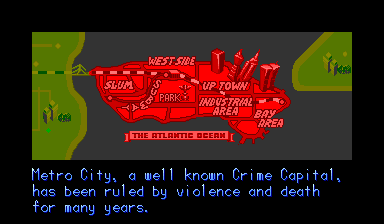
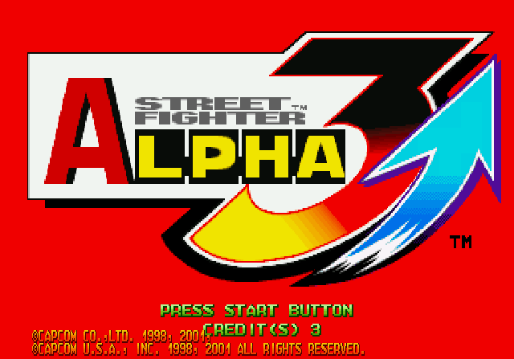

A lot of great arcade games never made it out of Japan, and plenty of others had their best material added later, on the home ports. Re-recorded soundtracks, cutscenes the arcade version never had, characters that turned up years afterward. The patches here put that work back onto the arcade hardware it belongs on.
Each one runs against your own copy of the game, on a real board, on a MiSTer, or in MAME. No game data is hosted here, and nothing goes out until it has been tested on the real thing.
CPS+
When Capcom brought its arcade games home on CD, it sent the music back to the studio and re-recorded it. Those versions never made it back to the arcade. CPS+ puts them there. Pick a game on your MiSTer and the arranged soundtrack is just playing, while every punch, voice and jingle still comes from the arcade board itself.
Final Fight — CD Cutscenes
The Sega CD version of Final Fight opened with a proper animated cutscene. This puts it back on the arcade game, running as native CPS-1 graphics, for HBMAME and MiSTer.

Night Warriors 2
The game before it came west as Night Warriors. This one stayed in Japanese arcades and never got an English release. Now it has one, under the name it should have had.

Street Fighter Alpha 2 Gold
Capcom's 2006 PlayStation 2 anthology carried a revised Alpha 2 Gold that added Cammy, and it only ever ran inside that anthology's own emulator. This rebuilds it as a real CPS-2 game, in four regional builds, for emulators, MiSTer, and real hardware.

Street Fighter Alpha 3 Upper
Zero 3 Upper shipped locked to Japanese cabinets. One byte in the disc header says so. Change it, re-encrypt it, and the same disc boots on a USA or Export NAOMI.

Vampire Savior 2
Vampire Savior 2 never left Japan. This translates all of it: Western character names, all 241 post-fight quotes, every ending, and the final showdown with Jedah.